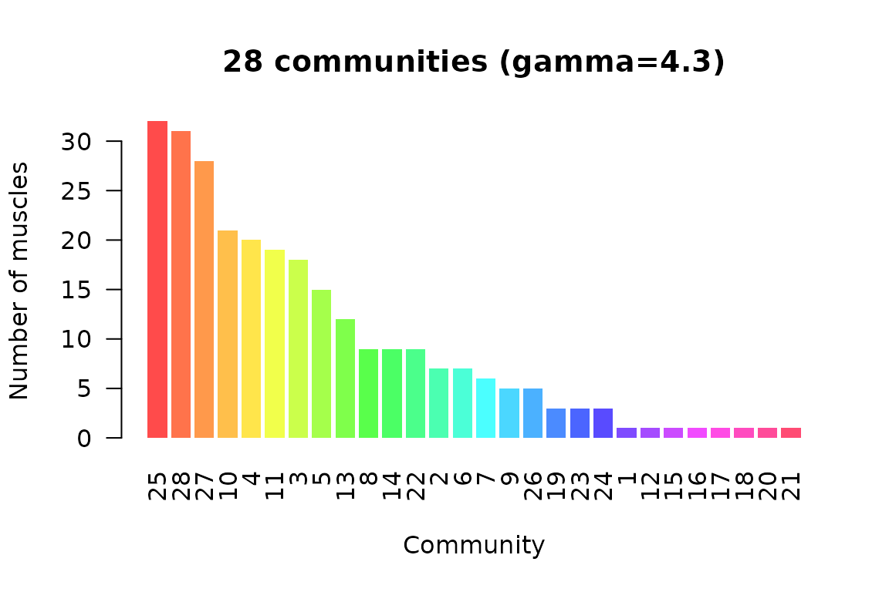

PhysioMSKNet treats the musculoskeletal system as a hypergraph: bones are vertices and muscles are hyperedges connecting the bones they attach to (Murphy et al. 2018). This vignette walks through the core workflow — build a hypergraph, measure it, detect communities, score perturbation impact, and compare impact against a degree-preserving null model — using a small synthetic network first and then the bundled dataset. Everything here runs offline.
A hypergraph from an incidence matrix
The incidence matrix C has one row per bone and one
column per muscle, with C[i, j] = 1 when muscle j
attaches to bone i. Here is a tiny four-bone, four-muscle
ring:
C <- matrix(c(1, 1, 0, 0, 0, 1, 1, 0, 0, 0, 1, 1, 1, 0, 0, 1),
nrow = 4, dimnames = list(paste0("bone", 1:4), paste0("m", 1:4)))
hg <- MSKHypergraph(C)
hg
#> MSKHypergraph
#> Bones (vertices): 4
#> Muscles (hyperedges): 4
#> Connections: 8
#> Sparsity: 0.5
#> Muscle degree range: 2-2
#> Bone degree range: 2-2The degree of a muscle (hyperedge) is the number of bones it spans; the degree of a bone (vertex) is the number of muscles attached to it:
hyperedgeDegree(hg)
#> m1 m2 m3 m4
#> 2 2 2 2
vertexDegree(hg)
#> bone1 bone2 bone3 bone4
#> 2 2 2 2Projections and network metrics
Collapsing the hypergraph onto the bones gives a weighted bone–bone graph; the network metrics are computed on that projection.
as.matrix(projectBoneGraph(hg))
#> bone1 bone2 bone3 bone4
#> bone1 0 1 0 1
#> bone2 1 0 1 0
#> bone3 0 1 0 1
#> bone4 1 0 1 0
m <- mskNetworkMetrics(hg, type = "bone")
m$density
#> [1] 0.6666667
m$degree
#> bone1 bone2 bone3 bone4
#> 2 2 2 2Community detection
mskCommunityDetect() runs Louvain modularity with a
resolution parameter gamma. On the bundled network the
paper’s resolution (gamma = 4.3) yields the functional
muscle communities:
hg_full <- MSKHypergraph()
comm <- mskCommunityDetect(hg_full, gamma = 4.3)
comm$n_communities
#> [1] 28
plotCommunityStructure(comm)
Perturbation impact
The impact score perturbs one muscle in a damped harmonic-oscillator
model and sums the resulting displacement across all bones.
mskSimulate() sets the model up; a short run is enough for
the synthetic network:
sim <- mskSimulate(hg, n_steps = 100)
scores <- mskImpactScoreAll(sim, verbose = FALSE)
scores
#> m1 m2 m3 m4
#> 200 200 200 200Comparison against a null model
To tell a structurally important muscle from one that merely has a high degree, compare its impact against a degree-preserving null ensemble. The deviation is expressed in standard deviations of the null distribution:
ens <- mskNullEnsemble(hg, n_null = 20, sim_params = list(n_steps = 100),
verbose = FALSE)
mskImpactDeviation(scores, hg, ens$null_scores)
#> m1 m2 m3 m4
#> 0.8094272 0.6164414 0.6807456 0.5247498Reproducing the paper’s statistics
The bundled validation tables let you reproduce the headline relationships without re-running the full simulation. For example, the impact-deviation / clinical-recovery regression (Fig. 3b):
rec <- mskImpactRecoveryModel()
rec$r_squared
#> [1] 0.4086942
rec$paper_target$r_squared
#> [1] 0.757Where to go next
- Bridge the network to measured signals with
emgToMSKMapping(),imuToMSKMapping()andmocapToMSKMapping(), then the matched analyses (imuNetworkKinematics(),imuImpactPrediction(), …). - The EMG-driven Hill muscle model (
emgDrivenForce(),calibrateEMGDrivenModel()) turns an EMG envelope into muscle force and joint moment. - See
?PhysioMSKNetfor the full, task-grouped index of entry points.